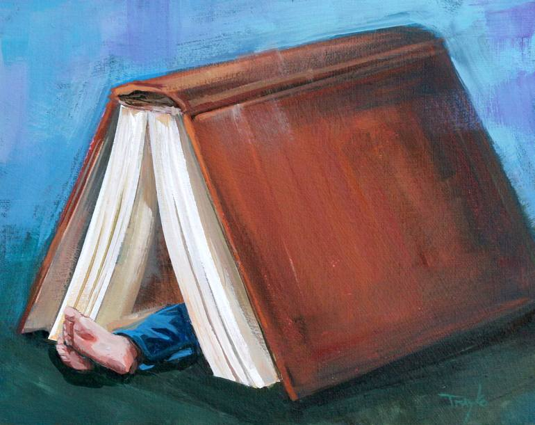
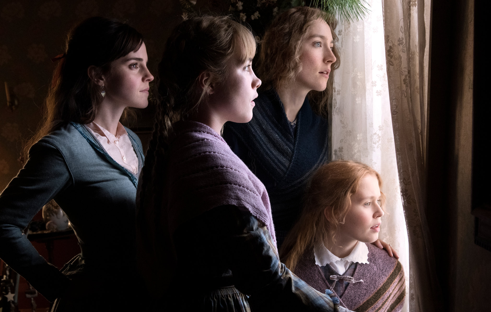
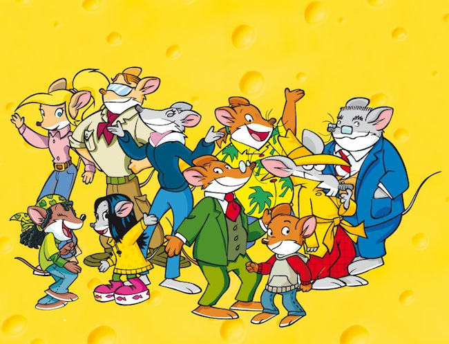

My Favourite Hobby Is
Reading Books

The Harry Potter Series
~J.K Rowling
Harry Potter is a series of seven fantasy novels. The novels chronicle the lives of a young wizard, Harry Potter, and his friends Hermione Granger and Ron Weasley, all of whom are students at Hogwarts School of Witchcraft and Wizardry

Little Women and Good Wives
~Louisa May Alcott
The story follows the lives of the four March sisters—Meg, Jo, Beth, and Amy—and details their passage from childhood to womanhood. It is loosely based on the lives of the author and her three sisters. Scholars classify it as an autobiographical or semi-autobiographical novel.

Geronimo and Thea Stilton
~Elisabetta Demi
In this series, the title character is an anthropomorphic mouse who lives in the fictional New Mouse City on fictional Mouse Island. A best-selling author, Geronimo Stilton works as a journalist and editor for the fictional newspaper The Rodent's Gazette.Also read Thea Stlton,his sister who describes the adventures of her favourite mouslings,The Thea Sisters.

My Favourite character
Ginerva Molly Weasly
In Harry Potter